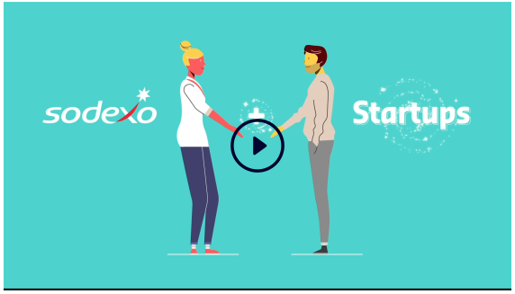

Sodexo Accelerator India seeks to be at the forefront of change by embracing emerging trends in consumer experiences across environments. The program explores associations in the gamut of food services, facility management and benefits & rewards, to deliver technologically-forward solutions. We are on a quest to connect and collaborate with innovative tech and non-tech start-ups. Start-ups operating in relevant solutions can expect scale and mentorship, as well as access to Sodexo’s client ecosystem. For Sodexo, such partnerships further our constant quest to lead positive change.